A Data-Driven Image Analysis Pipeline for Plant Phenotyping in Greenhouse Environments
1Department of Electrical and Computer Engineering, Texas A&M University, College Station, TX, USA
2Department of Soil and Crop Sciences, Texas A&M University, College Station, TX, USA
3College of Agriculture & Life Sciences, Texas A&M University, College Station, TX, USA
4Department of Biological and Agricultural Engineering, Texas A&M University, College Station, TX, USA
*Correspondence: fahimehorvatinia@tamu.edu, jpeeples@tamu.edu
Materials
Abstract
Project Organization and Workflow Integration
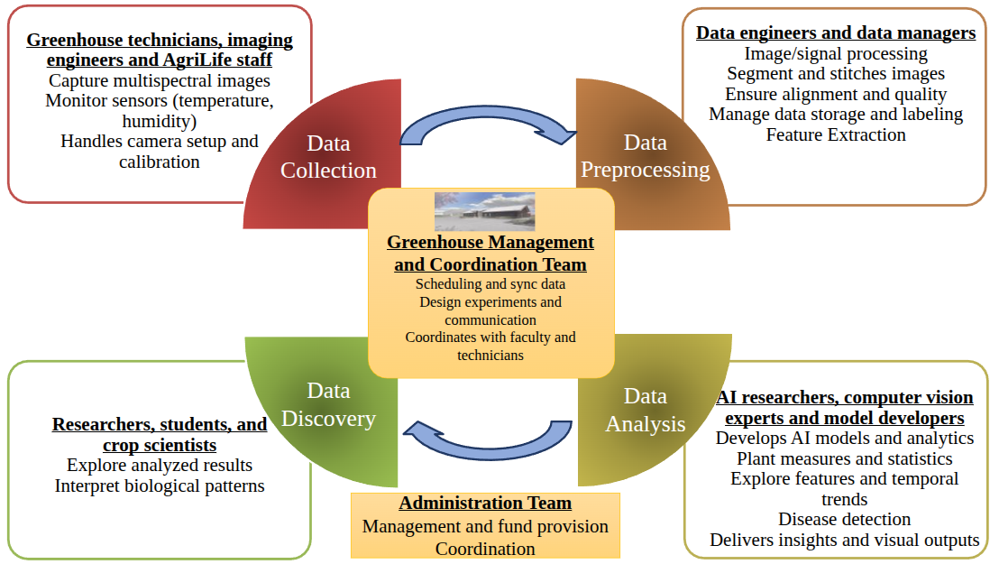
Comprehensive Phenotyping Pipeline
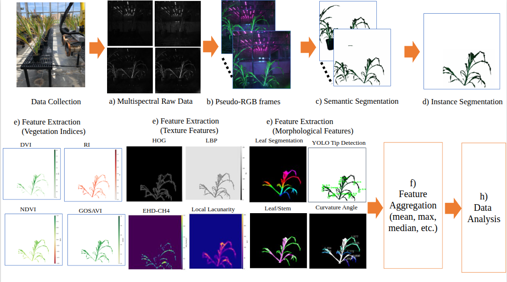
Plant Growth and Phenotyping Version 2 Dataset
This study introduces the expanded Plant Growth and Phenotyping Version 2 dataset (PGP v2), which substantially increases both scale and diversity from the initial release, comprising approximately 14,000 images of corn, 27,000 of cotton, 1,376 of rice, and 10,608 of sorghum, along with 1,840 manually annotated sorghum images for keypoint detection.
Dataset Samples
Corn (~14,000 images)
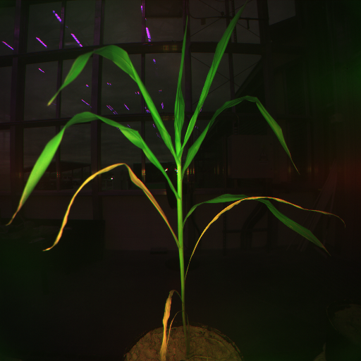
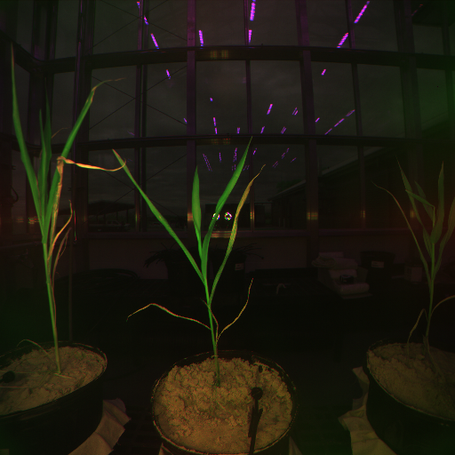
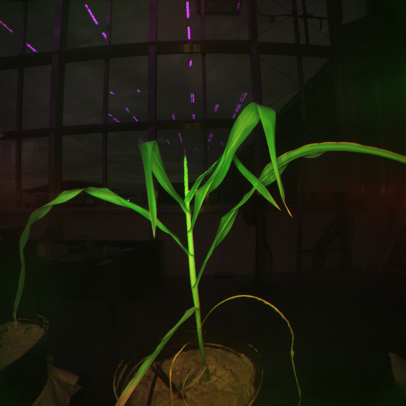
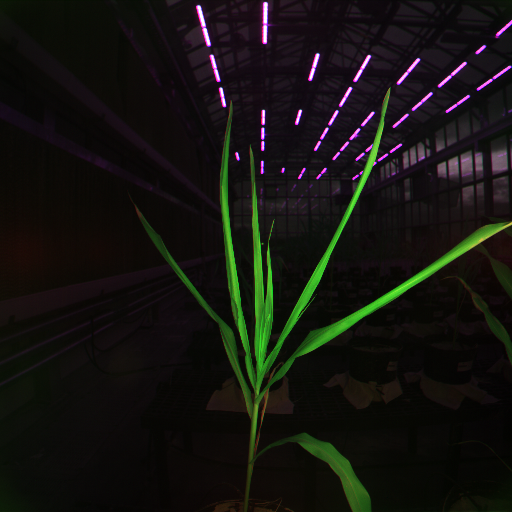
Cotton (~27,000 images)
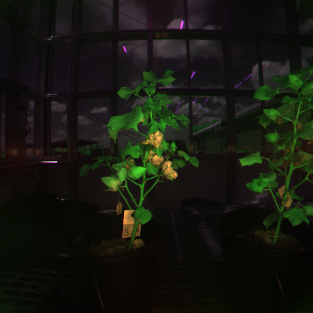
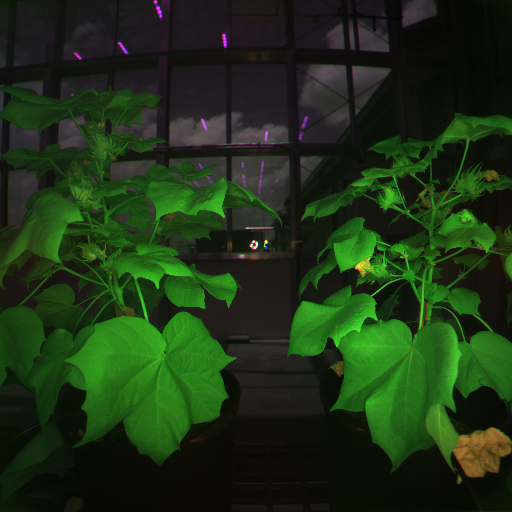
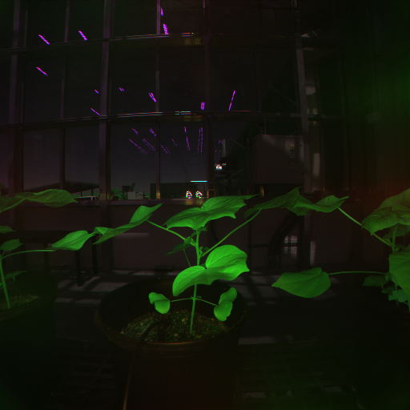
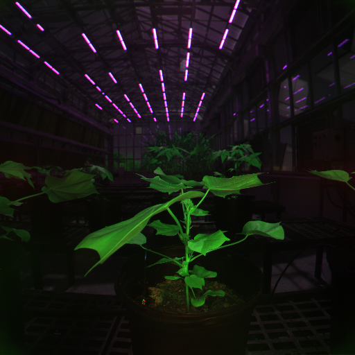
Rice (~1,376 images)
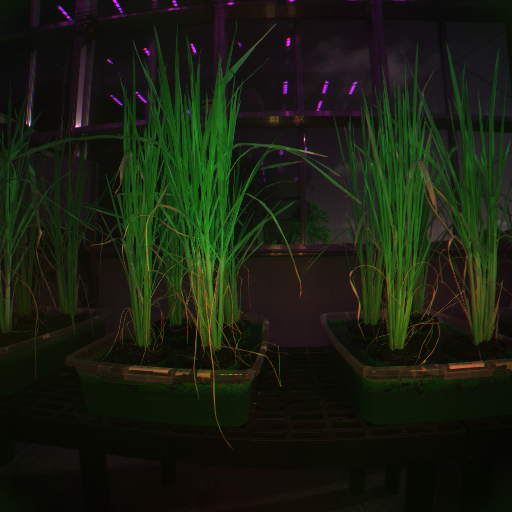
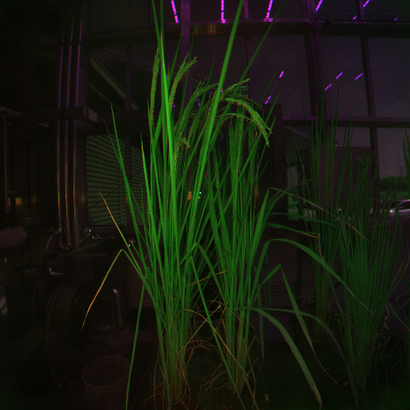
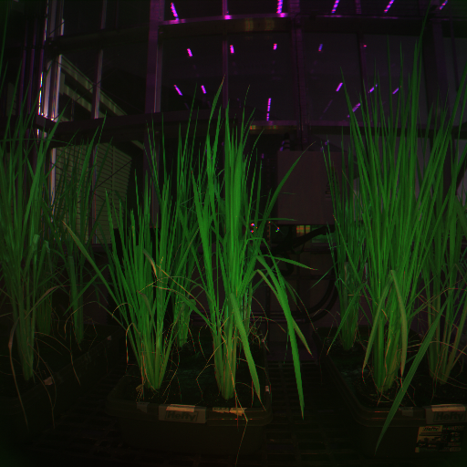
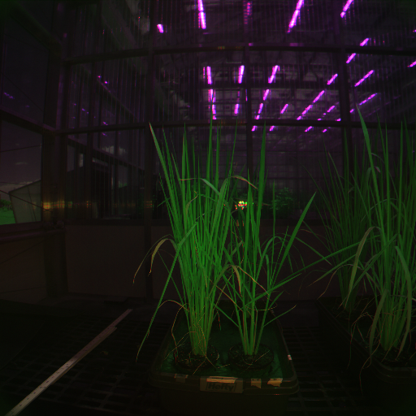
Sorghum (~10,608 images)
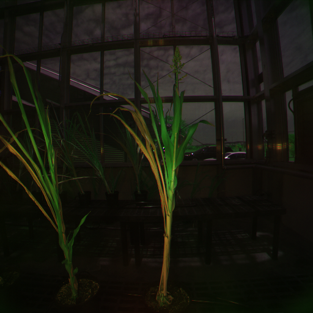
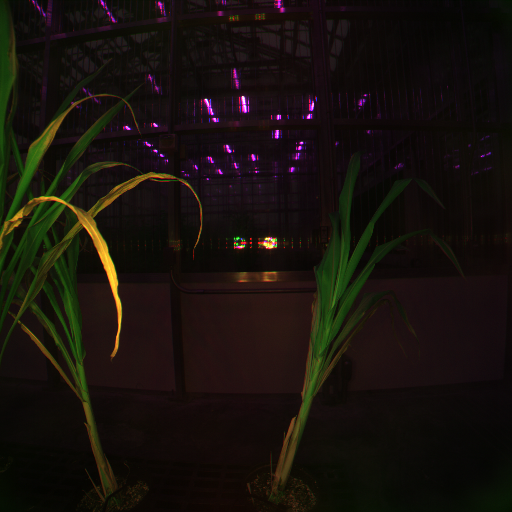
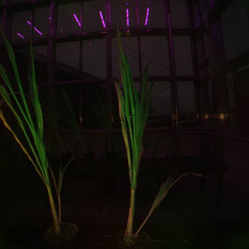
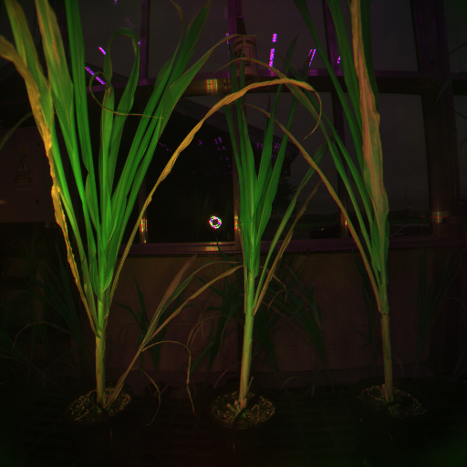
Citation
Plain Text:
F. Orvati Nia, J. Peeples, S. C. Murray, A. McFarland, S. Salehi, T. Vann, R. Hardin, D. D. Baltensperger, A. Ibrahim, N. Subramanian, N. Oladepo, M. Morse, and U. Vysyaraju.
"A Data-Driven Image Analysis Pipeline for Plant Phenotyping in Greenhouse Environments."
[Conference/Journal Name]. [Year].
BibTex:
@article{orvatini2024greenhouse,
title={A Data-Driven Image Analysis Pipeline for Plant Phenotyping in Greenhouse Environments},
author={Fahimeh Orvati Nia and Joshua Peeples and Seth C. Murray and Andrew McFarland
and Shima Salehi and Troy Vann and Robert Hardin and David D. Baltensperger and Amir Ibrahim
and Nithya Subramanian and Nazar Oladepo and Michael Morse and Uday Vysyaraju},
year={2024},
journal={[Journal Name]},
note={Texas A\&M University}
}